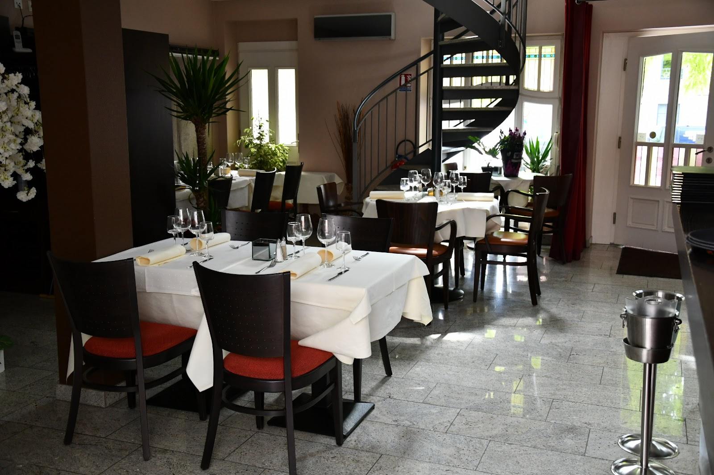
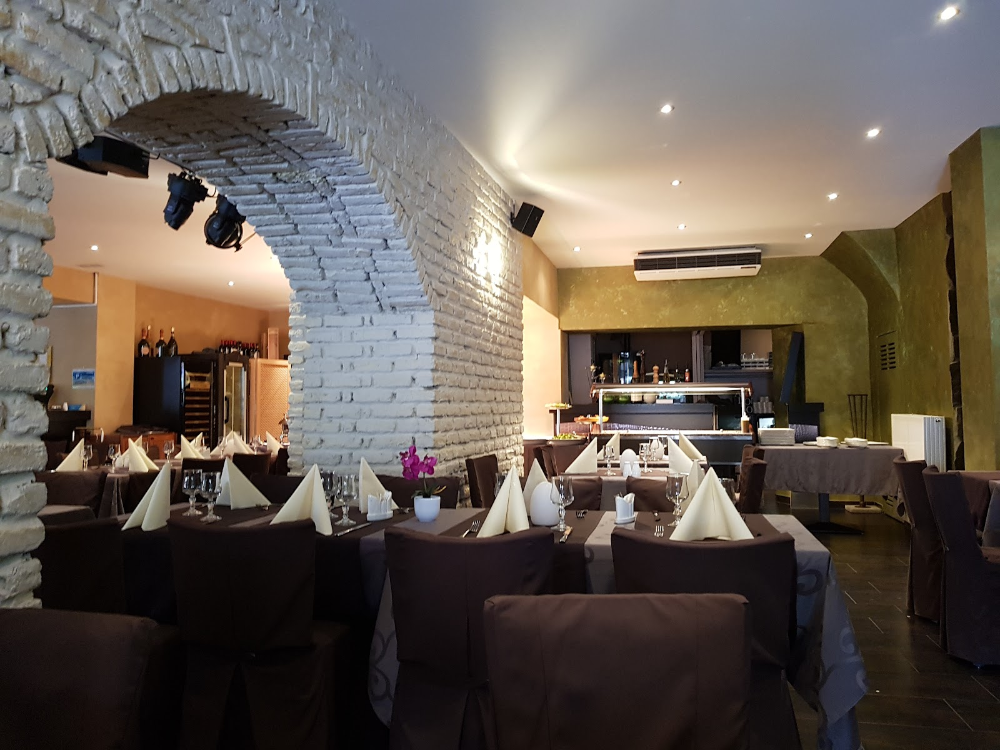
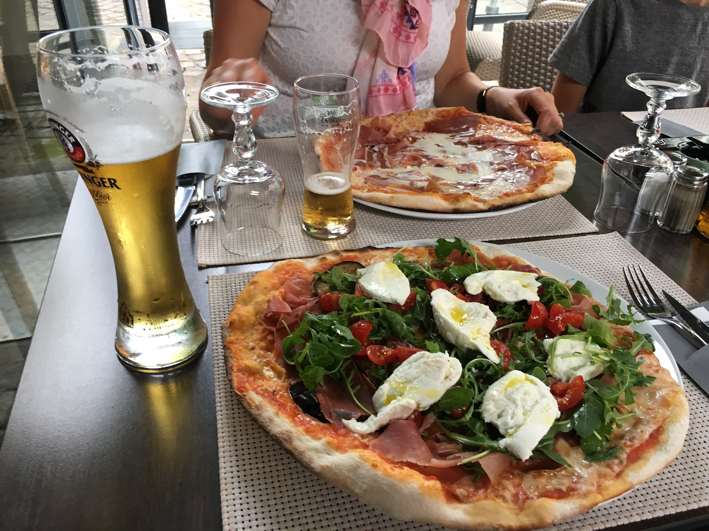
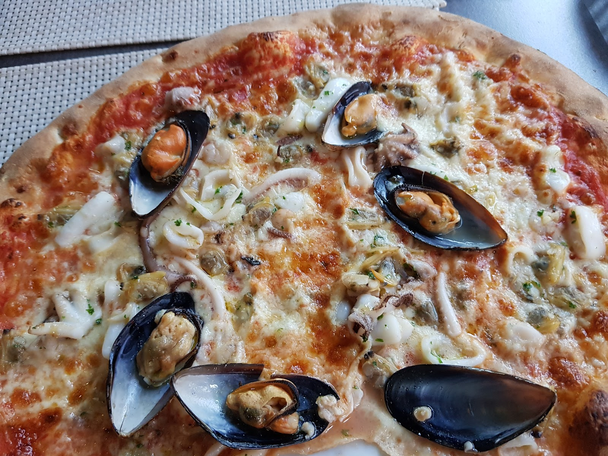
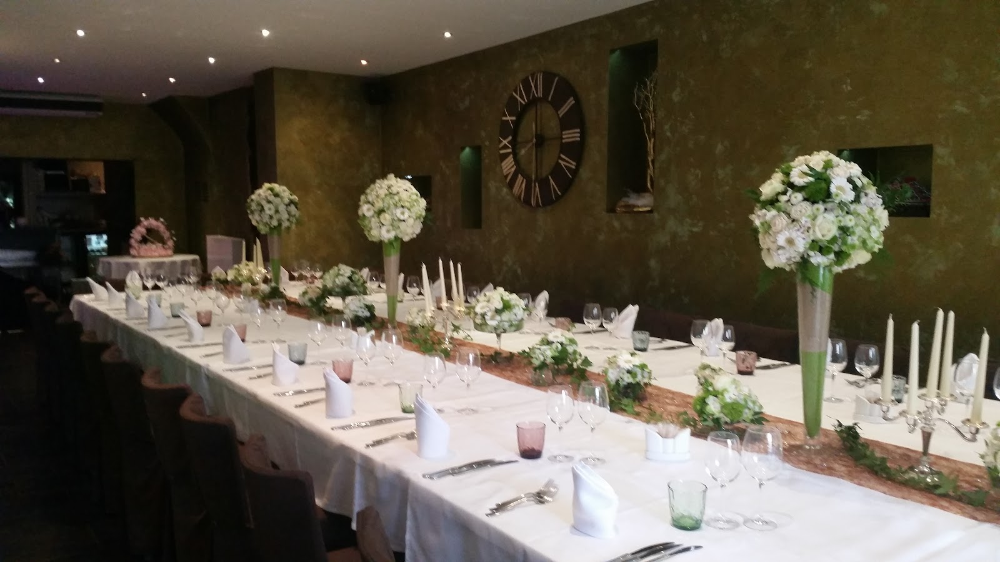
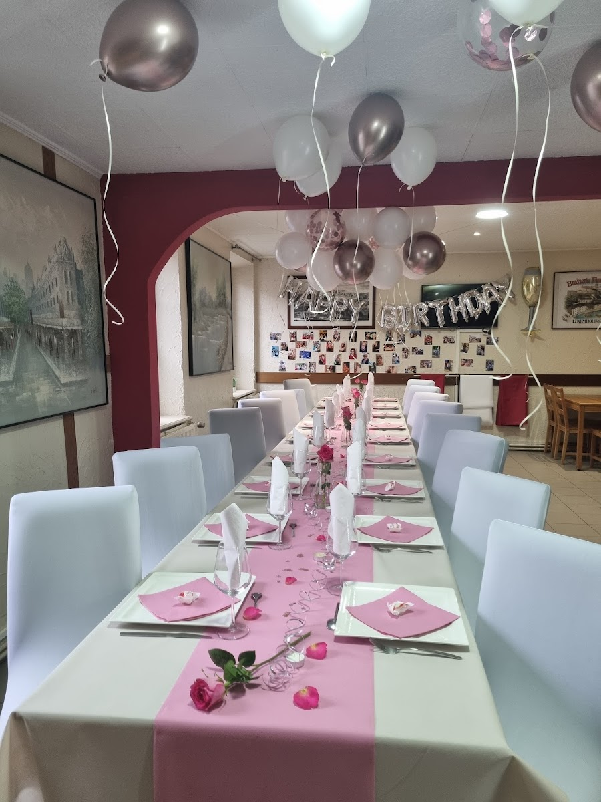

Diekirch · Restaurant · Bar · Lounge
Un bel mondo au cœur de Diekirch — cuisine italienne, bar & lounge.
Le midi, un buffet italien à volonté. Le soir, la table à la carte et ses pizzas au feu de bois. La nuit, le lounge et vos fêtes. Suivez le cadran.

Bel Mondo se lit comme un cadran. À chaque moment de la journée, une autre adresse — le même toit.
Le buffet italien à volonté — antipasti, salades & spécialités, servis au comptoir.
La carte : pizzas au feu de bois, pâtes fraîches & poisson. Une table semi-gastronomique.
Le lounge-bar, ses soirées musicales et vos fêtes privées sous la grande horloge.
À midi, Bel Mondo passe en formule buffet. On se sert au comptoir, sous la voûte de pierre : antipasti, salades composées, spécialités chaudes italiennes et pizzas du four. La formule des habitués et des familles de Diekirch.
Composition et prix du buffet à confirmer avec l'établissement.




Le soir venu, Bel Mondo prend son second visage : bar à cocktails, ambiance feutrée et, le week-end, ses soirées festives et musicales. C'est le vrai supplément d'âme de la maison.
Cocktails, bar complet et programmation musicale les week-ends — à confirmer.
Anniversaires, banquets et fêtes de famille dans la salle événementielle, sous la grande horloge romaine. Capacité à confirmer.

Nos heures d'ouverture — service du midi et du soir. Fermé le lundi.
| Mardi | 11:00–14:30 · 18:00–22:00 |
|---|---|
| Mercredi | 11:00–14:30 · 18:00–22:00 |
| Jeudi | 11:00–14:30 · 18:00–22:00 |
| Vendredi | 11:00–14:30 · 18:00–22:00 |
| Samedi | 11:00–14:30 · 18:00–22:00 |
| Dimanche | 11:00–14:30 |
| Lundi | Fermé |
Horaires indicatifs — à confirmer avec l'établissement.